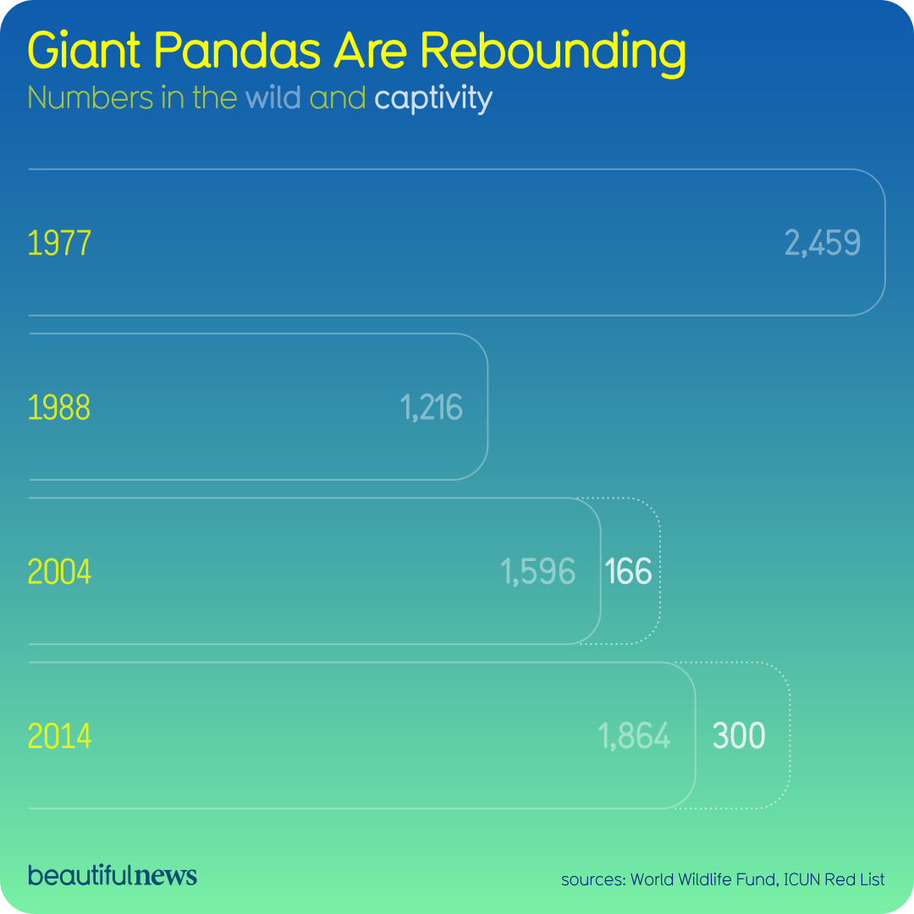

Lab Overview
Lab Instructions: This lab applied Edward Tufte's principles to critically evaluate real-world data visualizations. The assignment required selecting an infographic from curated galleries (Beautiful News, Feeling Data Studio, or Data to Art), analyzing it through the lens of information "resolution" (how comprehensive and complete the graphic is), and examining at least two additional concerns such as effects without causes, cherry-picking, overreaching, or rage to conclude. The critique needed to be at least 500 words and demonstrate close reading of both the visualization and any supporting source material.
What I'm Doing: In this lab, I selected and critiqued the "Giant Pandas Are Rebounding" infographic from Beautiful News. I analyzed how the visualization presents data about panda population recovery, examining what information is included versus what's missing from the supporting article. Using Tufte's framework, I evaluated the graphic's information resolution and identified issues with presenting effects without causes and overreaching in its conclusions about conservation success.
Note: My written reflection and analysis can be found at the bottom of this page.
Visualization

Source: Beautiful News, Information is Beautiful
Critique
Information Resolution
The visualization clearly shows that the giant panda population is increasing, and the upward trend is easy to understand at a glance. The design is engaging and makes the message feel very positive. However, the graphic oversimplifies the story behind panda conservation. The supporting article explains differences between wild and captive pandas, where they live, and ongoing threats like climate change, but none of this information appears in the visual. Because of this, the graphic focuses more on being clear and appealing than on showing the full picture.
Effects Without Causes
The infographic shows that panda populations are increasing, but it does not explain what caused that change. The supporting article talks about government policies, habitat protection, and long-term conservation efforts, but these factors are not included in the visual. Because of this, viewers might assume the rebound happened on its own instead of understanding that it required intentional and ongoing human effort.
Overreaching and Rage to Conclude
The visualization also goes a bit too far by making panda conservation seem like a complete success. The positive tone and upward trend push viewers to quickly assume the problem is solved. This shows a bit of a rage to conclude, since the graphic does not encourage people to think about the remaining risks or the ongoing conservation work that the article explains is still needed.
Conclusion
Overall, the “Giant Pandas Are Rebounding” infographic does a good job telling a positive story, but it is limited when it comes to deeper analysis. Using Tufte’s ideas, the graphic has low information resolution and focuses more on the outcome than the causes or uncertainties behind it. The visualization works well as an introduction to the topic, but the supporting article is needed to fully understand the challenges and efforts involved in panda conservation.
Written Reflection
In Lab 3, I focused more on working with data and understanding how datasets can be analyzed and interpreted. This lab helped me see how raw data can be organized and explored in order to identify patterns or trends. I also learned that preparing and cleaning data is an important step before analysis can begin. During this process, I gained experience thinking more critically about what the data represents and how it can be communicated clearly. By the end of the lab, I had a better understanding of how data analytics can be used to turn information into insights and how these insights can be presented in a way that others can understand.